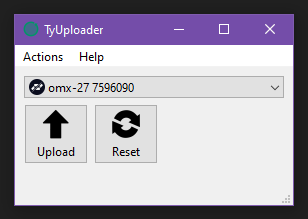

Flashing firmware
The most recent firmware can be downloaded from Github here.
Note:
- .uf2 firmware files are for v3
- .hex firmware files are for v1/v2
OMX-27 v3
v3 is based on the RP2040 microcontroller.
To flash the firmware, connect the device to your computer via USB while holding the BOOTSEL button to enter bootloader mode. Alternately, if already connected via USB, you can press and hold both the BOOT and RESET buttons and then release the RESET button before releasing the BOOT button. A new RPI-RP2 drive should mount on your computer. Drag and drop the appropriate UF2 firmware file onto the RPI-RP2 drive. After a few seconds, the drive will unmount and the board will reboot with the new firmware installed.
Be sure you are using a known working USB Type-C data cable
OMX-27 v1/v2
These versions are based on Teensy microcontrollers.
Firmware flashing using Teensy Loader:
See the instructions here (loading a HEX file with Teensy Loader) if you don't know how to flash firmware to a Teensy.
Firmware flashing using TyUploader:
Alternately you can use TyUploader (which is part of TyTools):
- Open "TyUploader" (Note: "TyCommander" was also installed, don't use that.)
- Make sure "omx-27 xxxxxxxx" is selected in the dropdown if you have other Teensy devices plugged into your computer.
- Click "Upload" select the hex file.

Be sure you are using a known working USB Type-b-micro data cable